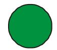

<!DOCTYPE html>
<html>
<head>
	<meta charset="UTF-8">
	<link href="../css/style_mock.css" rel="stylesheet" />
</head>
 <body>
<script type="text/javascript" src="../../mock_code.js"></script>
<script>

//todo - Read question from notepad
var questions = [
["Which of these is a triangle?"," How many animals in all ? ","7","4","6","8","A"],
[" 6 - 6 = ____","2","6","5","0","D"],
["86 = ____ tens and ____ones","6 and 6","6 and 8","8 and 8", "8 and 6","D"],
["5 tens and 5 ones = ____","50","5","55","0","C"],
["4 + 4 + 4 = ____","4","14","12","10","C"],
[" ___ + 10 = 12","1","2","10","3","B"],

]


</script>
<table><tr>
  <td class="timer-pic"></td><td class="timer-text"><p id="demo" ></p></td> 
</tr>
</table>
<h2 id="test_status"></h2>
<div id="test"></div>
</body>
</html>
